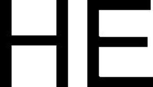

Trade Mark Journal No.2025/011 14 March 2025
WO0000001826756 (3,5,16,38,44)
Office of origin: France
Date of International Registration:14 October 2024
Date of designation in the UK:
14 October 2024

- Class 3
- Soaps, perfumery products, essential oils, cosmetics, face and body skin care creams, hair lotions; dentifrices; deodorants for personal use (perfumery); incense; cosmetic preparations for slimming; cosmetic preparations for toning purposes.
- Class 5
- Pharmaceutical products; sanitary products for medical use and for intimate hygiene; dietetic substances for medical use; food for babies; plasters; materials for dressings (except instruments); disinfectants for medical or sanitary use (other than soaps); products for destroying vermin; fungicides.
- Class 16
- Albums; newspapers; magazines; journals (magazines); periodicals; publications; books; coffee table books; prospectuses; pamphlets; journals (magazines); magazines; paper, cardboard, printed matter; bookbinding material; photographs; stationery; adhesives for stationery or household purposes; artists' materials; paintbrushes; typewriters and office requisites (except furniture); instructional or teaching material (except apparatus); plastic materials for packaging (not included in other classes); printing type; printing blocks, photographs; mounting brackets for photographs; printing blocks; posters; engravings or lithographic works of art; paintings (pictures), framed or unframed; aquarelles; drawings; graphic reproductions; graphic representations, photo-engravings, lithographs; photographic thermal prints; photograph albums; publications featuring photographs and photographic collections.
- Class 38
- Telecommunications; transmission of images, sounds, information and data by telephone, telematic and computer means; communications (transmission) via computer terminals; electronic telecommunications and mail services via a global communication network (the Internet) or a local network (intranet); transmission of commercial and/or advertising data via the Internet; transmission of information via electronic catalogs on the Internet; transmission of photographs, pictures, sounds, information and data via all kinds of media and electronic communication networks (fixed or mobile, wireless or cabled telephone, computer, the Internet); electronic transmission of pictures, photographs using all methods and electronic communication networks.
- Class 44
- Medical services, namely: medical care services; medical assistance; hygienic and beauty care for human beings; beauty salons; hairdressing salons; plastic surgery; manicure services; massage; tattooing; midwife services; medical nursing services; hospital services; rest homes; pharmacy consultancy services; balneotherapy and hydrotherapy treatments; hammams (Turkish baths); information on hygiene and beauty care.
Monsieur DIACAKIS Richard
Representative: Monsieur DEGRAVE Christophe @MARK, 16 rue Milton, F-75009 Paris, FRANCE